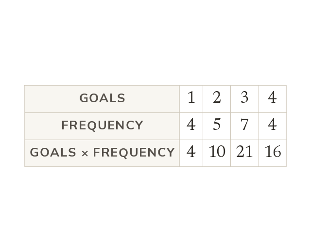
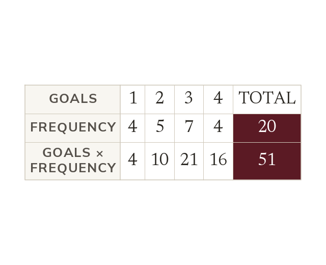
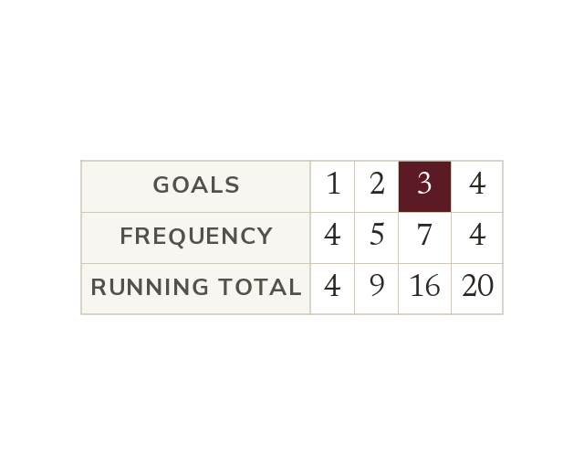
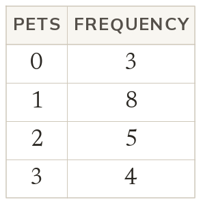
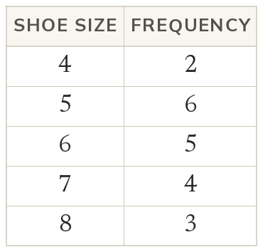
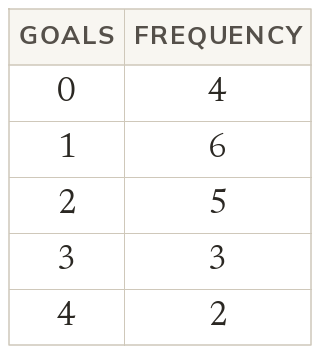
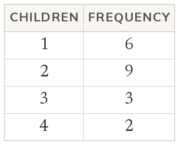
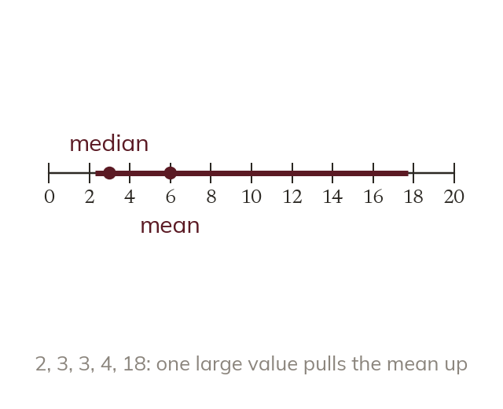
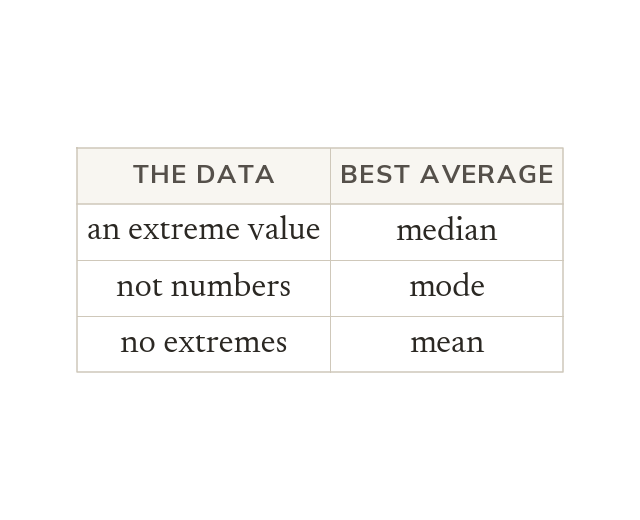

Each value comes with a frequency
In a frequency table, a value with frequency 7 appears 7 times in the data. So the total of the data is the sum of each value times its frequency.
Large data sets are summed up in a frequency table rather than a list. Today we find averages straight from the table.
Work down the page at your own pace. Write every answer in your book first, then click to check it.
Read each card, then follow the worked examples one step at a time.

In a frequency table, a value with frequency 7 appears 7 times in the data. So the total of the data is the sum of each value times its frequency.

Divide that total by the total frequency, not the number of rows. Here, 51 ÷ 20 = 2.55 goals.

The mode is the value with the highest frequency. Count down the frequencies to the median, at position (n + 1) ÷ 2.


Pick an answer. If it's wrong, the feedback tells you which mistake it was.


Read each card, then follow the worked examples one step at a time.

The mean uses every value. One very large value pulls the mean up. It barely moves the median.

Use the median when there is an extreme value. Use the mode when the data are not numbers. Use the mean when there are no extremes.
Pick an answer. If it's wrong, the feedback tells you which mistake it was.
Finished? Next lesson: 10.18.3 Estimating the Mean of Grouped Data.
Log in, then search for a code to practise that skill.